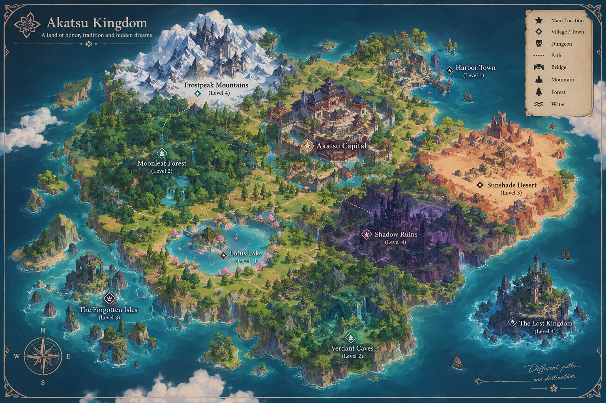

The Echoes of Akatsu

In the ancient kingdom of Akatsu, forgotten magic sleeps beneath the ruins of a once-great civilization.
When strange echoes begin to spread across the land, Ming Yi, a young apothecary with a mysterious past, is drawn into a journey far beyond her quiet life. Ancient secrets awaken, old powers return, and someone she loves has been taken.
To find her sister, Ming Yi must cross enchanted forests, forgotten temples, and dangerous kingdoms—while uncovering the truth behind the Echoes of Akatsu.
Some legends are meant to be remembered. Others are meant to remain buried.